テキスト
プログラムを作って遊べるようになるのを目標に書いてみました。
丁寧に書いているので、わからないというより、まわりくどくかんじるかもしれません_(:3 」∠ )_
まず最初に２つ、7zipとGitをインストールしてもらいたいです。
7zip
2.softフォルダの中に7z1900-x64.exeがあるのでこれを開いてInstallをクリックします。
これで7zipのインストールは終わりです。
Git
次に2.softフォルダに2.soft.7z.001というファイルがあります。
001がついていない場合はwindowsの設定で拡張子というのが非表示になっているので、
これを表示する状態にする必要があります。
とりあえずこのサイト https://paso-kake.com/it/windows10/3103/を見て設定してみてください。
設定できない場合show_extension.batというものを置いているのでこれをクリックして実行してください。
実行後に再起動が必要ですがこれで拡張子が表示されるはずです。
拡張子が表示される状態で001~008までファイルがあるのがわかると思います。
001のファイルを右クリックして、出たメニューの中から7Zipにカーソルを合わせます。
カーソルを合わせるとさらにメニューが出るのでその中のここに展開を選びます。
これで
- Git-2.27.0-64-bit.exe
- go1.14.4.windows-amd64.msi
- python-3.8.3-amd64.exe
- VSCodeSetup-x64-1.45.1.exe の４つのファイルが展開されます。
この中のGit-2.27.0-64-bit.exeを開いてください。
開けたら以下の画像の通りに進めていってください。


ここの赤まるで囲った部分を画像に合わせてください。


ここのEnable symbolic linksにチェックつけてください。

以上でGitのインストールが終わりました。
導入
何事も一番最初の一歩を踏み出せるかが大切です。
やりたいなと思っていても最初の一歩が踏み出せない、よくあることです。
その一歩を踏み出したあなたがそのまま次の一歩を踏み出せるようお手伝いをいたします。
どの一歩にもそれなりの障害があります。
急ぐことはないので一歩ずつ進んでいきましょう。
最初の一歩
まず最初にするべきは全体を眺めることだと思います。
山に登るとして、まずすることは山を眺めることだと思います。
自分の目標を見据え、どう歩めばよいのか、その全体をつかみましょう。
プログラムの山頂にはあなたの作りたいものがあります。 どうやったらそこにたどり着けるのかその道を眺めてみましょう。
山を登る最初の一歩は山を登るための準備です。
準備ができてないと途中で引き返すことになります。
同様にプログラムの最初の一歩も準備です。
準備ができていないと障害に多くぶつかることになり、
途中でモチベーションが切れ、その歩みを止めてしまいます。
一度歩くのをやめてしまうと期間が開くことになり、
次歩きだそうとしたら前回やっていたことを忘れてしまっています。
もちろん障害がなくても三歩進んで二歩下がるものではありますが、
障害があれば三歩進む前に止まってしまうかもしれません。
よい準備をして、できるだけ障害を排除して進みやすくしましょう。
準備
何かをするにはたいてい道具がいります。
プログラムを書くのに必要な道具を揃えましょう。
プログラムに必要な道具は従来だいたいこんな感じでした。
- 人とデータの仲介役をするパソコン一式
- 文字を書けるテキストエディタ
- テキストエディタ書いた文字列をプログラムとして動作できるように変換するコンパイラというプログラム
今でもこの通りではありますが、ちょっとプログラムを触るだけなら、最近便利なものがあります。
テキストエディタとコンパイラを一つにまとめて簡単に提供してくれているwebサイトがあります。
よって最近ではちょこっとプログラムを書いて動かすには、
- パソコンまたはスマートフォン
- ウェブブラウザ この２つでとりあえず始められます。
なので２章ではブラウザを使って初めてのプログラミングをしてもらいます。
その後３章以降では、本格的にプログラムを書くために上の例のようにテキストエディタとコンパイラを使っていきます。
ここでは３章以降のためにプログラムを書きやすいテキストエディタのインストールと、
プログラミング欠かせないコンパイラを２つパソコンにインストールします。
こういった最初の準備作業を環境構築といいます。
環境構築
それでは次のページから環境構築をします。
以降のの文章で、aaa/bbb/cccこういうふうに書いているときは
aaaフォルダの中のbbbフォルダの中にあるcccというファイルのことです。
テキストエディタのインストール
テキストエディタというのはただ文字を入力できてそれを保存するものです。
いわゆるメモ帳です。
ここで「あっワードか」となったかもしれませんが、
MicrosoftのWordはワードプロセッサーといい、テキストエディタにはふつう含めません。
プログラムを書く上で文字の色を変えたり、大きさを変えたり、余白を調整したりする機能のある文書作成ソフトは使いません。
シンプルにただ文字列を文字列として保存できる物を使います。
テキストエディタにも種類がいっぱいありますが、
メモ帳でも一応可能ですが、それは通勤に三輪車を使うようなものです。
ワードが自動車だとするとプログラムを書くのには不要なものが多すぎます。
エンジンはついてなくていいので、自転車を使いましょう。
例として
- Terapad 無料 私もよく使う
- 秀まるエディタ 有料 私は使ったことがない
- サクラエディタ 無料 私は使ったことがない
- Mery 無料 私は使ったことがない
- Sublime text 無料 そこそこ最近人気だった
- Visual Studio Code 無料 絶賛流行中
などを挙げておきます。
ここでは最近流行りのVisual Studio Codeというテキストエディタをインストールします。
もちろんテキストエディタが何なのか理解していて、お気に入り物がある場合それを使って構いません。
私はVimをつかってこのテキストを書いています。Vimはいいぞ(/'ω')/
Visual Studio Code のインストール
インストール難しいところはないので雑に行きたいと思います
まず 2.soft/VSCodeSetup-x64-1.45.1.exe を開きます。
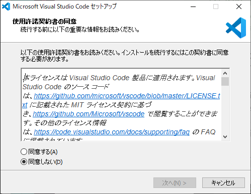
ひらくとこのような画面になりますので、よくあるソフトと同じようにインストールできます。
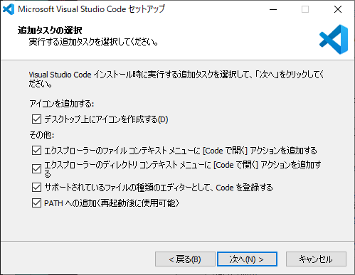
この画面になったらチェックをすべて入れます。
あとはそのまま進めるとインストールできます。
インストールが完了するとVisual Studio Codeが起動します。

左の赤まるをつけたアイコンをクリックします。
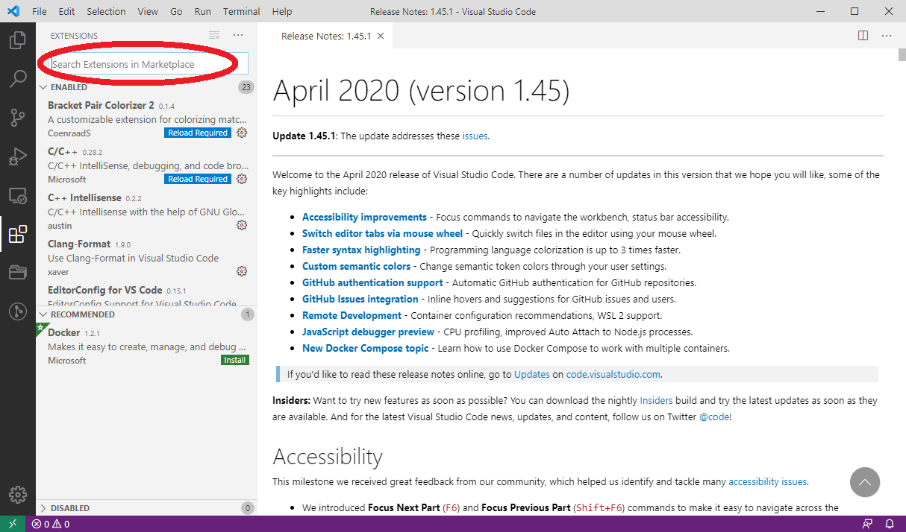
するとこのように左側にメニューが開きます。
これはVisual Studio Codeに拡張機能を検索、インストールできるメニューです。
上に検索窓がありますので検索してインストールできます。
よく使うので覚えておきましょう。
Pythonのインストール
forNoah/2.soft/python-3.8.3-amd64.exe を開きます。
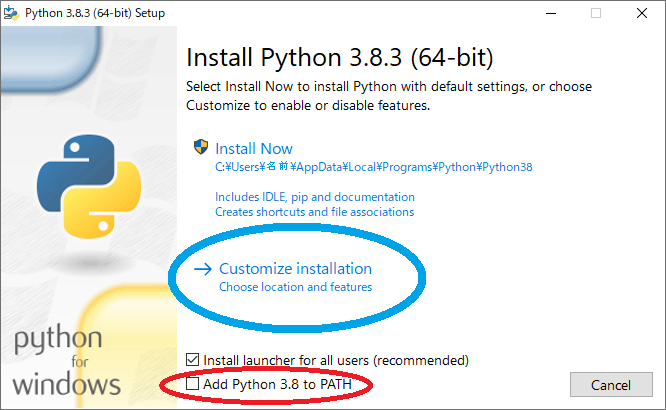
こういうのが出ますので、
赤い丸で囲ったAdd Python 3.8 to PATHにチェックを入れ、
青い丸で囲ったCustomize installationをクリックします
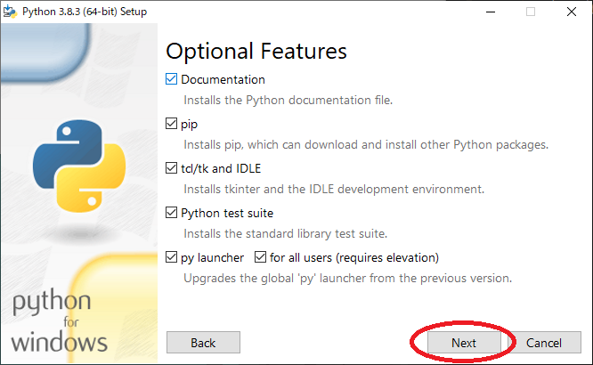
上のようになったら、この画像の通りになっているのを確認して、そのままNextを押します。
下の画像の赤のところにようにチェックを入れます。
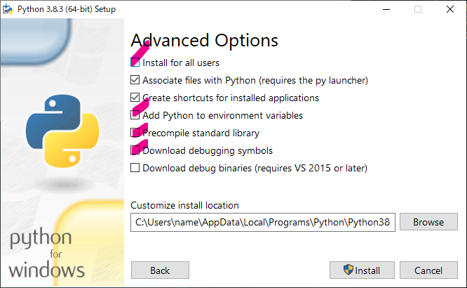
こうなります。

同じ状態になったら左下のInstallをクリックします。

こんなふうになります。 私は1分くらいで終わりました。
インストール終わった感出ますがそのままDisable path length limit をクリックします。

クリックすると消えますので左下のCloseを押します。

これでPythonのインストール完了です。
Go言語のインストール
Googleが作ったGo言語(普通Golangという)を使えるようにします。 コンパイルが必要なコンパイル言語といわれる種類の言語です。
インストール
まず、2.soft/go1.14.4.windows-amd64.msiを開きます。
特に難しいことはなく、適当に肯定的な選択肢を選んでいきます。 10秒くらいでインストールが完了します。
ハローワールド
それではいよいよプログラムに入っていきます。
日本で小学校に入ったら入学式があるように、
プログラムの入門の第一歩はハローワールドと決まっています。
入学式経験したことがないというのはちょっと寂しいですよね。
私もあなたに寂しい思いをしてほしくありません。
いわば伝統です。
わたしもハローワールドしたことあるよという人になってほしいのです。
世界中のプログラマーは皆ハローワールドをやってプログラマーになっていきます。
次はあなたの番です。
そもそもハローワールドとは
FF14の民にはハロワでおなじみハローワールド。

これのことです。
正確にはこれの元ネタです。
ハローワールドはプログラム入門者にプログラムの例を出す際最初に書かれる、
実行するとただHello world!と表示されるプログラムのことです。
実際にはこのようになります。
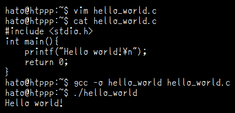
今は一番下の部分にHello world!と書いてあることだけ見ておいてください。
ただこれをパソコンに表示させる、それだけのプログラムがハローワールドです。
たったこれだけですが、これを実際にやるにはいくつか課題があります。
例えば正しくプログラムを入力しなければなりません。
プログラムは入門者には呪文にしか見えないでしょう。
呪文を１文字も間違えずに正しく入力するのはそれなりに難しいことです。
変なところに余分な文字が入っていてはいけないのですが、
プログラムが呪文に見える入門者にとってそもそも全てが変なところなので、
どこが余分な文字が入っていてはいけない変なところなのかわかりません。
それでは実際にやっていきましょう。
C言語でハローワールド
C言語は昔にOS(オペレーティングシステム)を作るために作られたプログラミング言語です。
今でも特に組み込み系やハイパフォーマンスが要求される分野でよく使われています。
コンパイルが必要なコンパイル言語という種類の代表的なプログラミング言語です。
ハローワールド
このURLを開いてください。
https://wandbox.org/permlink/xGzIHxMqkg9ssjJ8
既にプログラムが書かれているページが開きます。
このサイトWandboxは、
webブラウザ上でプログラムを動かすことができるwebサイトです。
上の部分にプログラムを入力することができます。
プログラムはこのようになっています。
#include <stdio.h>
int main(){
printf("");
return 0;
}
赤まるのところのRun (or) Ctrl+Enter) をクリックすると、
上に書かれたプログラムが実行されます。
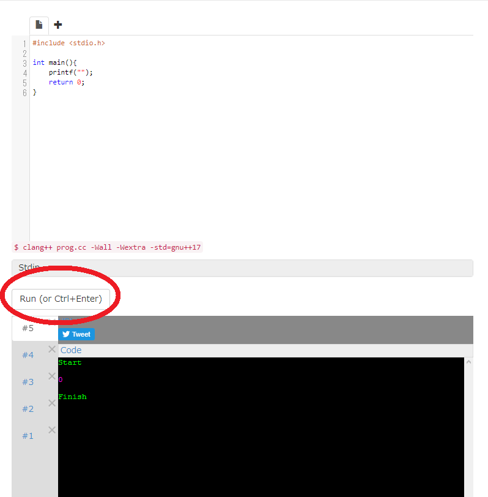
実行すると下の黒い部分に実行結果が表示されます。
今はそこに
start
0
Finish
と書かれています。
ここで、4行目のprintf("");のダブルクオート"で囲まれたところに
Hello world!\n と入力してみましょう。
プログラムはこのようになっています。
#include <stdio.h>
int main(){
printf("Hello world!\n");
return 0;
}
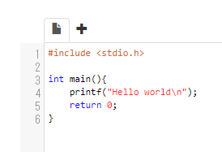
こんな感じです。
それではRun (or) Ctrl+Enter)を押して実行してみましょう。
正しく入力できていれば下の黒い部分がこのようになります。
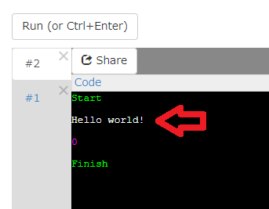
start
Hello world!
0
Finish
さっきと変わり、Hello world! と表示されましたか？
もし正しくできなかった場合、
なにか間違って入力してしまっていたり、
間違って文字を消してしまっていたりが考えられます。
正しく実行できなくて、間違っている部分がわからなくても大丈夫です。
こちらのURLを開けば正しく入力されたプログラムが開けます。
https://wandbox.org/permlink/TPbCXa7oxdeM8zrb
正しくハローワールドできましたか？
これであなたは初めてのプログラムを書いて実行することができました!
おめでとうございます('ω')/
プログラムの中身の解説が欲しいかもしれませんが、
それはとりあえず後回しにします。
次へ進みましょう。
C++でハローワールド
C言語でハローワールドはできましたか？
次はC++言語でハローワールドします。
C++言語はC言語を拡張して作られたプログラミング言語で、
大規模なプログラムが作りやすくなっています。
C言語と同様に、コンパイルが必要なコンパイル言語という種類のプログラミング言語です。 C++言語はよく「しーぷらぷら」と呼ばれます。
ハローワールド
このURLを開いてください。
https://wandbox.org/permlink/cps6j0HbEnmBBViX
既にプログラムが書かれているページが開きます。
プログラムはこのようになっています。
今回は既にダブルクオートの中にHello world!!と書かれています。
#include <iostream>
int main() {
std::cout << "Hello world!!" << std::endl;
return 0;
}
C言語と少し変わっているのがわかりますか？ C言語のハローワールドはこんな感じでした。
#include <stdio.h>
int main(){
printf("Hello world!\n");
return 0;
}
C言語ではprintf("Hello world!\n");となっていた部分が、
C++ではではstd::cout << "Hello world!!" << std::endl;となっています。
それでは実行してみましょう。
といってもURLを開いた状態で、既に実行された状態になっています_(:3 」∠ )_

実行結果は!の数が増えていますがC言語のハローワールドと一緒です。
少しいじってみましょう。
std::cout << "Hello world!!" << std::endl;
の上の行にprintf("Hello world!\n");
と書いてみましょう。
プログラムはこうなります。
#include <iostream>
int main() {
printf("Hello world!\n");
std::cout << "Hello world!!" << std::endl;
return 0;
}
実行してみましょう。
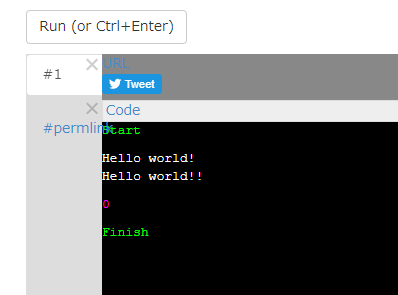
正しく実行できたでしょうか。
正しく実行できなくても気にしないでください。
正しく実行できるURLを用意しています(/'ω')/
https://wandbox.org/permlink/xAmO61t4VeNgkffs
最初のほうにC++言語はC言語を拡張したものだと書きました。
C++言語はC言語の拡張なので、C言語のプログラムがある程度そのまま動きます。
それでは次にすすみましょう。
Go言語でハローワールド
次はGo言語というプログラミング言語でハローワールドします。
Go言語はGoogleがつくった新しい言語です。
C言語は1972年、C++は1985年、Go言語は2009年なのでだいぶ新しいです。
Go言語は検索するときにgoで検索すると動詞のgoが一致して検索しずらいのもあって、
普通Golangと呼ばれます。